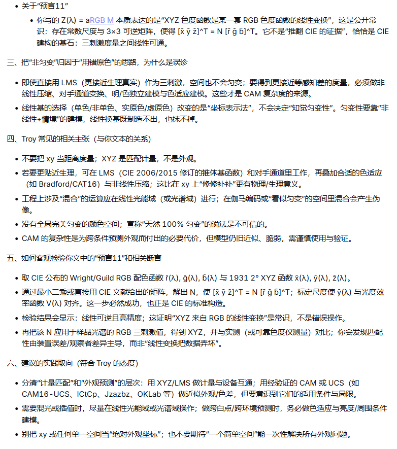
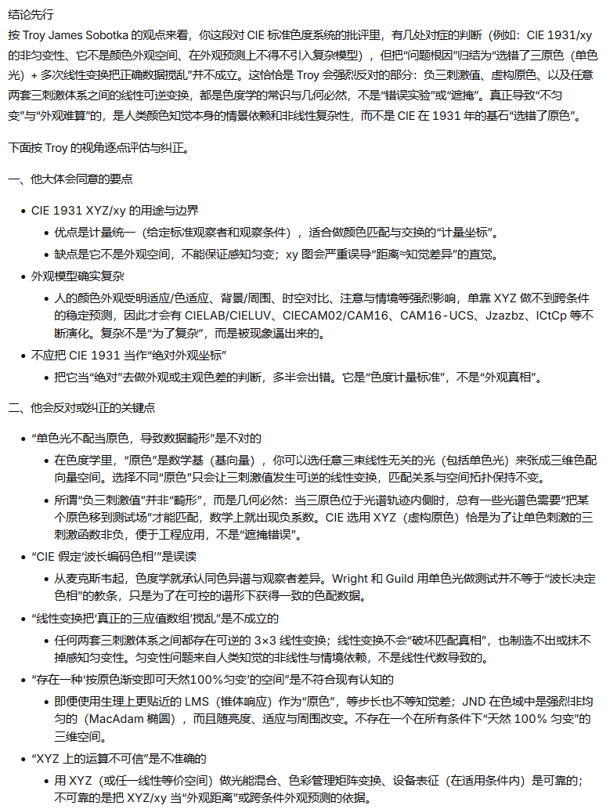

Rhinnschneevall
@RainduRhinns
@seroglumax @hagishigure 我觉得不存在目前天然100%匀变的颜色三维空间这个批抨是其中最有力的，他这个给的确实不对，至少应该改成理想无限接近100% ,LMS锥体响应作为“原色”确实也有人做过，但是我觉得这个问题是完全不一样的，他有一个更大的生物神经膜电位问题。这个例子不太恰当，饱和纯色光作为三原色的混色仍然是原教旨的


seroglu
@seroglumax
@RainduRhinns @hagishigure 根据Troy的观点，颜色空间是高度情景依赖的，同时兼顾编码统一和色品匀变会更复杂困难： https://t.co/whEPhE9N75